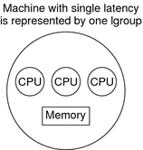

| Previous | Next |
Verifying the Interface Version
Initializing the Locality Group Interface
Locality Group Characteristics
Locality Groups Overview
Shared memory multiprocessor computers contain multiple CPUs. Each CPU can access all of the memory in the machine. In some shared memory multiprocessors, the memory architecture enables each CPU to access some areas of memory more quickly than other areas.
When a machine with such a memory architecture runs the Solaris software, providing information to the kernel about the shortest access times between a given CPU and a given area of memory can improve the system's performance. The locality group (lgroup) abstraction has been introduced to handle this information. The lgroup abstraction is part of the Memory Placement Optimization (MPO) feature.
An lgroup is a set of CPU–like and memory–like devices in which each CPU in the set can access any memory in that set within a bounded latency interval. The value of the latency interval represents the least common latency between all the CPUs and all the memory in that lgroup. The latency bound that defines an lgroup does not restrict the maximum latency between members of that lgroup. The value of the latency bound is the shortest latency that is common to all possible CPU-memory pairs in the group.
Lgroups are hierarchical. The lgroup hierarchy is a Directed Acyclic Graph (DAG) and is similar to a tree, except that an lgroup might have more than one parent. The root lgroup contains all the resources in the system and can include child lgroups. Furthermore, the root lgroup can be characterized as having the highest latency value of all the lgroups in the system. All of its child lgroups will have lower latency values. The lgroups closer to the root have a higher latency while lgroups closer to leaves have lower latency.
A computer in which all the CPUs can access all the memory in the same amount of time can be represented with a single lgroup (see Figure 1-1). A computer in which some of the CPUs can access some areas of memory in a shorter time than other areas can be represented by using multiple lgroups (see Figure 1-2).
Figure 1-1 Single Locality Group Schematic
Figure 1-2 Multiple Locality Groups Schematic

The organization of the lgroup hierarchy simplifies the task of finding the nearest resources in the system. Each thread is assigned a home lgroup upon creation. The operating system attempts to allocate resources for the thread from the thread's home lgroup by default. For example, the Solaris kernel attempts to schedule a thread to run on the CPUs in the thread's home lgroup and allocate the thread's memory in the thread's home lgroup by default. If the desired resources are not available from the thread's home lgroup, the kernel can traverse the lgroup hierarchy to find the next nearest resources from parents of the home lgroup. If the desired resources are not available in the home lgroup's parents, the kernel continues to traverse the lgroup hierarchy to the successive ancestor lgroups of the home lgroup. The root lgroup is the ultimate ancestor of all other lgroups in a machine and contains all of the machine's resources.
The lgroup APIs export the lgroup abstraction for applications to use for observability and performance tuning. A new library, called liblgrp, contains the new APIs. Applications can use the APIs to perform the following tasks:
Traverse the group hierarchy
Discover the contents and characteristics of a given lgroup
Affect the thread and memory placement on lgroups
| Previous | Next |